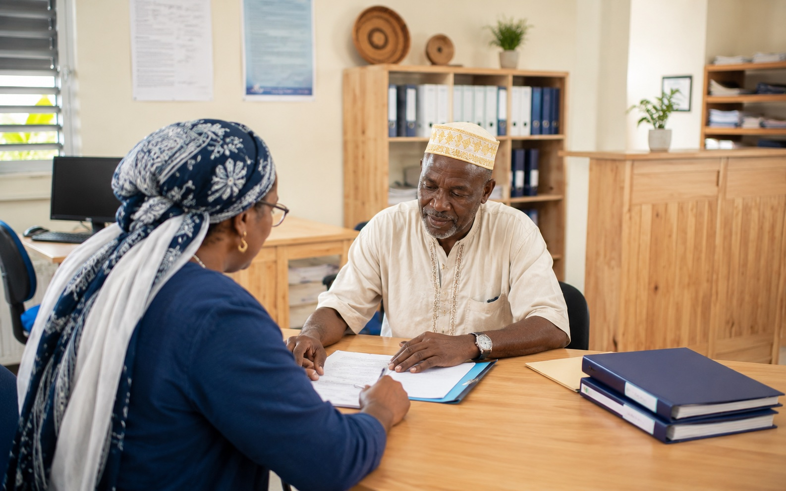
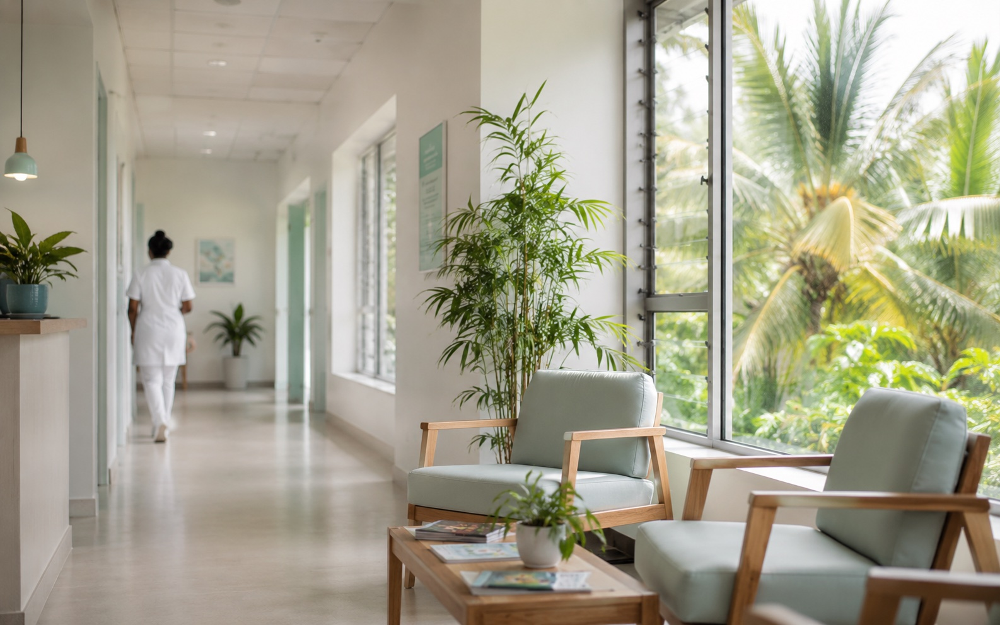
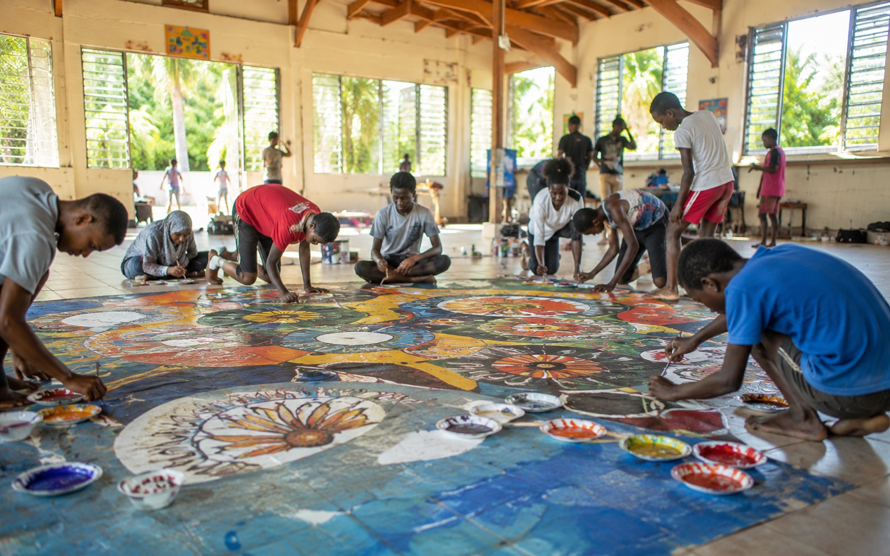
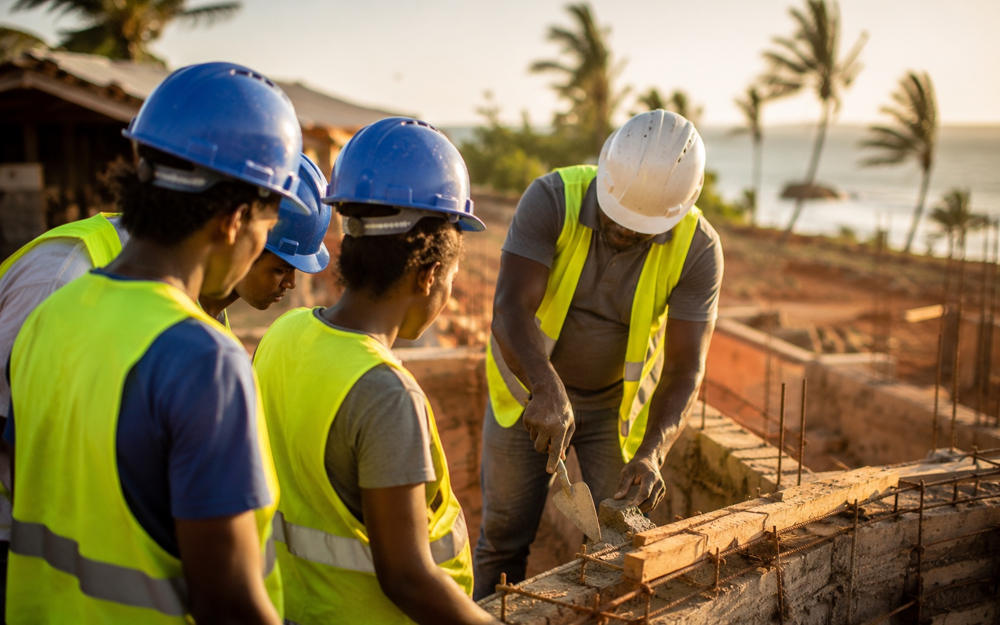
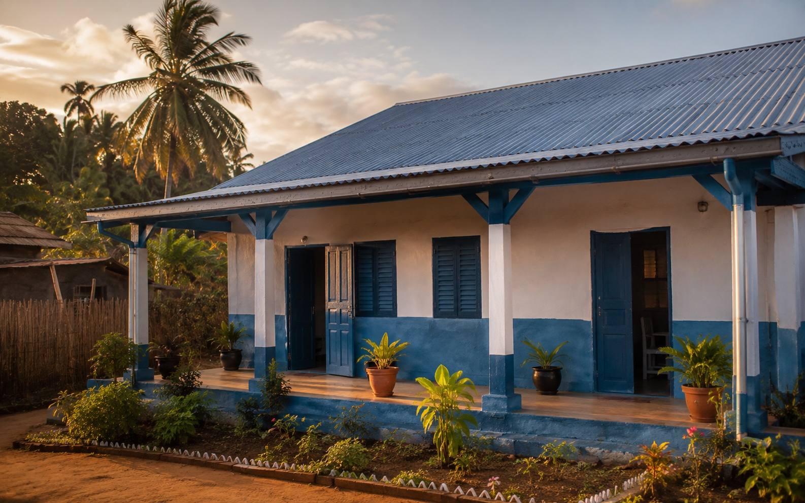
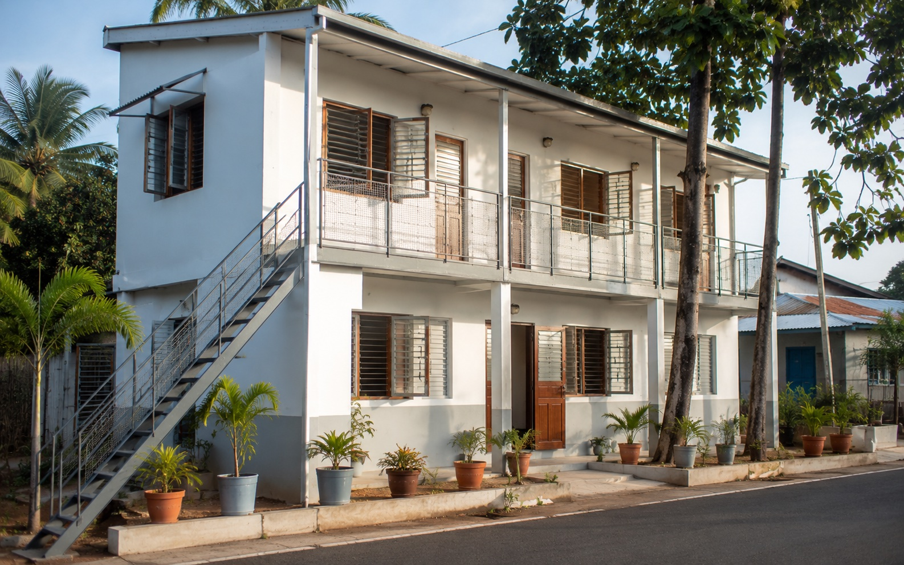

En cours
Observatoire des solidarités
Collecte et analyse des données sociales pour piloter l'action publique territoriale.
Programme structurant 2025–2029
Chaque projet répond à un besoin précis du territoire et s'inscrit dans la mission d'action sociale d'intérêt communautaire confiée au CIAS par la CCSUD. De l'observation des fragilités à l'accompagnement quotidien, ils dessinent une politique cohérente au service des habitants des quatre communes.
Collecte et analyse des données sociales pour piloter l'action publique territoriale.

À l'étudeAccès au droit et accompagnement juridique de proximité pour tous les habitants.

PlanifiéRegroupement de professionnels de santé pour un accès aux soins équitable sur le territoire.

En coursAnimation culturelle, sportive et jeunesse pour renforcer le lien social intercommunal.

En coursParcours d'accompagnement vers l'emploi pour les personnes éloignées du marché du travail.

À l'étudeAccompagnement des ménages pour l'accès au logement décent et la rénovation de l'habitat.
Soutien financier aux étudiants et aux familles en situation de fragilité économique.

PlanifiéAccueil, hébergement et accompagnement vers le logement pérenne pour les publics vulnérables.
8 projets structurants
Chaque projet répond à un besoin identifié sur le territoire du Sud de Mayotte, coordonné par le CIAS dans le cadre de sa mission d'intérêt communautaire.